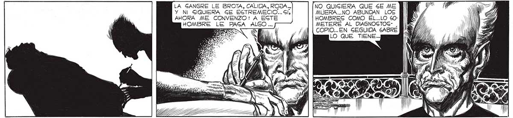
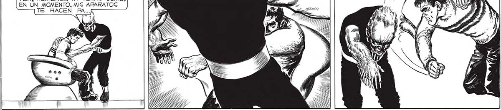

164 LA GANGRE LE BROTA, CALIDA, ROJA.. NO QUISIERA QUE SE ME Y NI GIQUIERA GE ESTREMECIO... SÍ, AHORA ME CONVENZO: A EGTE MUERA...NO ABUNDAN LOG HOMBRES COMO EL..LO 50: METERE AL DIASNOGTOG- , COPIO...EN GEGUIDA SABRÉ LO QUE TIENE... PS ¿SS ¡OOO e o nn TE A WN Y S NO SÉ QUÉ ME SACUDE MAS.. Gl LO QUE LE PAr GA AL POBRE FRANCO, O EL PROCEDER DEL BOMANO”.. PARA EL SOMOS MENOG pS ANIMALES ! ¿Va Nros 1 LUN N 4 eS Lg BN ASS 1) Y TES A l, bl a e UY VEN, HOMBRE... YA VERAS CÓMO, EN UN MOMENTO, MIG APARATOG TE HACEN PA... YA ENTIENDO... DESMAGNETIZO LA CINTA METALICA QUE LO GUJETABA... ¿ADÓNDE LO AS WT, e Ue, ¿AN

